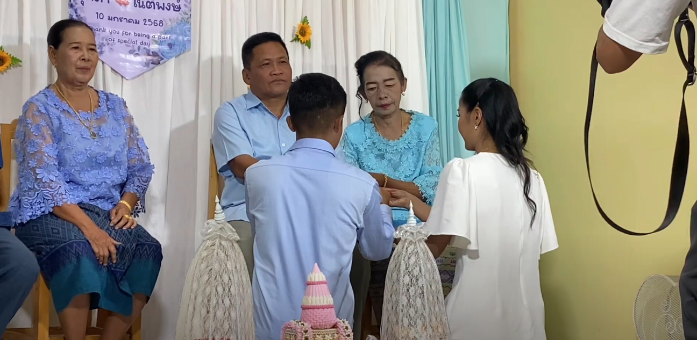
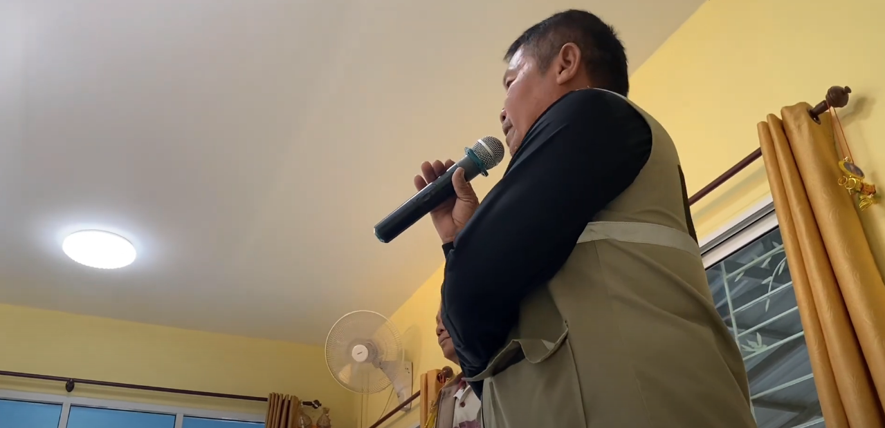
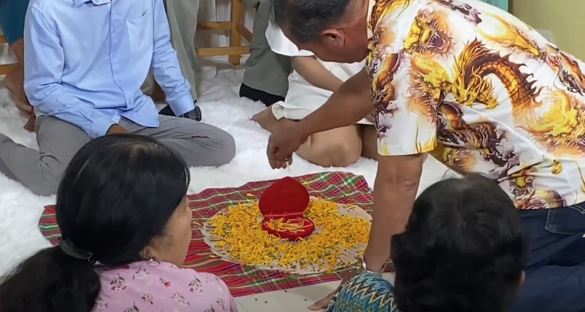

A Wedding in Lopburi
Thailand's Monkey Metropolis
Lopburi is a province about 2 hours north of Bangkok. Its flat treeless landscape reminds me of the California Central Valley. Driving down the highway you can come across the occasional mountain or large hill in the distance, as well as a village or small town every now and again.
This central province of 760,000 people has two claims to fame. One is the historical sites of the old Thai kingdoms, like Sukhothai or Ayutthaya. The other is the monkeys. Lopburi is notorious for its monkey problems.
There are countless stories of tribes of monkeys going to war with each other and with the humans they cohabitate with, monkey gangs stealing, pillaging, and plundering. Though lately the monkey problem has decreased a lot, as the locals finally got fed up with their behavior and got rid of them. On top of all this, Lopburi is the province where my wife is from.
The Journey to Lopburi
The week before we traveled to Lopburi my wife had excitedly told me that her “sister” (really just an old friend she used to work with, but she calls all of her female friends and cousins sister) would be having a wedding next Friday and asked if we could go. It didn’t take much convincing, and I immediately agreed to go. I thought it would be good for my wife to see her old friend and introduce our baby daughter to her, and also I would get to experience my first Thai wedding.
The bus from Si Racha, where we live, to Bangkok took about one and a half hours. Then from Bangkok to Lopburi it took about two hours or so. We arrived at the hotel around 12pm and still had a few hours to relax before the wedding began at 4pm.
Sitting on the balcony, while waiting for the wedding to start, my wife told me about life in Lopburi. She told me about the people who she grew up with, the simple and rural lifestyle they have in this province. She illustrated the difference in cultural attitude between Lopburi and other more developed parts of Thailand, telling me that the parents dream that their child will be able to grow up and get a job working at Big C, a western style modern grocery store chain in Thailand. She explained that there are no malls in Lopburi, very little modern infrastructure, so Big C is seen as cutting edge and high class. A big store with AC and a variety of refrigerated products is held to a high degree, where in Bangkok it is so common that it is underappreciated and overlooked.
Agriculture is Lopburis primary industry, with sugar cane being at its core. Naturally, most of its residents work as farmers. It is understandable how a farmer, who spends long hours doing hard physical labor under the boiling Thai sun, would see the air conditioned Big C in the town over as the shining opportunity for their child’s future career.
At the Wedding

There is no Grab, the Thai equivalent to Uber, in Lopburi so we had to ask the manager of the hotel if we could get a ride. She got one of her employees to take us in his truck. We were packed tightly into it, and could barely fit. I was in the middle with the baby. It took us about 15 minutes to get to my wife’s friend’s house, where the wedding took place.
When we got there, quite a few people were already there, maybe one hundred or so. I didn’t know a single person and my wife only knew her friend, everyone else was a stranger. The bride and the groom came out of the house to greet us, and led us into the house where they showed us great hospitality.
Food was being made right outside the house. A group of older women sat cutting, cooking, and boiling countless vegetables, meats, and spices. They had been doing this all day and would continue to do so into the evening.
The bride and the groom went there to retrieve some for my wife and I. They brought us a variety of dishes and let us eat as much as we wanted to as we sat at the small wooden table in the kitchen. The larb was my personal favorite. You can never go wrong with it: ground pork mixed with onions and a bit of spice.
After eating, I took care of the baby while my wife went to talk with her friend who was the bride. As I waited awkwardly sitting in a chair in the living room I saw a cameraman come in to set up everything needed for a photo shoot. Then after about 20 minutes or so at 5pm the wedding goers began to assemble and the ceremony began. This is what it looked like:
Cultural Elements of a Thai Wedding
The most interesting points of the wedding ceremony for me:

The wedding announcer - I don’t know what he was saying exactly, but as I understand it he was announcing for all the people that could not see the ceremony. There were a few hundred guests attending, so not all of them could fit into the tiny room where the ceremony was taking place. In the US, most weddings I have seen take place in a giant event hall or in a church, so all of the guests can see the ceremony. So, this was new for me.

The dowry - Seeing the groom and his parents put money and gold on the floor in front of all to see was intriguing. I suppose it’s a way for the groom and his family to show to the community that they have legitimacy, they have the resources to take care of his future wife. In the US, this custom is not really present. While there are wedding gifts, there is no part in the typical US marriage ceremony where the groom makes a public display of his wealth and presents it as a gift to his bride.
 The tying of the bracelet and the wedding gifts - Many of the guests got in a long line that went out the door and then each one proceeded to tie a white string around the bride and groom’s wrists with a banknote attached to it. This is an old Thai and Lao tradition popular in Issan (North Eastern Thailand). It comes from the Buddhist and Animist traditions. This ritual is called “Pook Ka Mua” (ผูกข้อมือ). It symbolizes good luck and spiritual protection. It is also a way to signify community support and connection. When the wedding guest ties the white string to the bride and groom’s wrists with the bank note, they are displaying their connection to the couple. While I do think this isn’t too different from the US custom of gift giving, it is different in that the Thais use a string whereas the Americans will use an envelope to present the bride and groom their monetary gift. This Thai custom of gift giving at a wedding has more spiritual significance and is more transparent, put on display for all to see.
The tying of the bracelet and the wedding gifts - Many of the guests got in a long line that went out the door and then each one proceeded to tie a white string around the bride and groom’s wrists with a banknote attached to it. This is an old Thai and Lao tradition popular in Issan (North Eastern Thailand). It comes from the Buddhist and Animist traditions. This ritual is called “Pook Ka Mua” (ผูกข้อมือ). It symbolizes good luck and spiritual protection. It is also a way to signify community support and connection. When the wedding guest ties the white string to the bride and groom’s wrists with the bank note, they are displaying their connection to the couple. While I do think this isn’t too different from the US custom of gift giving, it is different in that the Thais use a string whereas the Americans will use an envelope to present the bride and groom their monetary gift. This Thai custom of gift giving at a wedding has more spiritual significance and is more transparent, put on display for all to see.